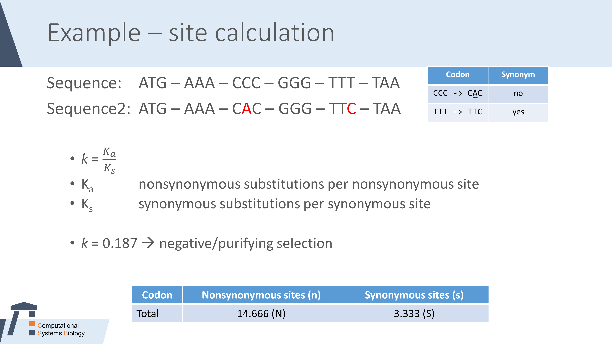
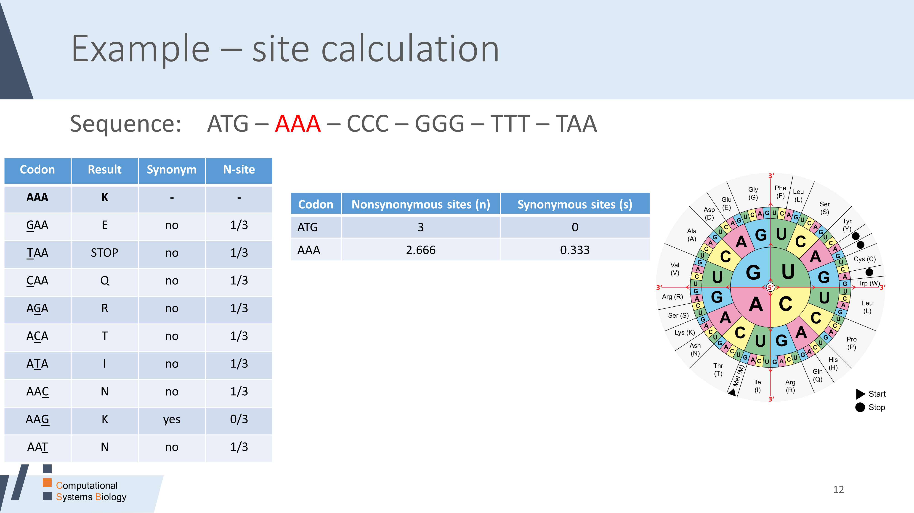
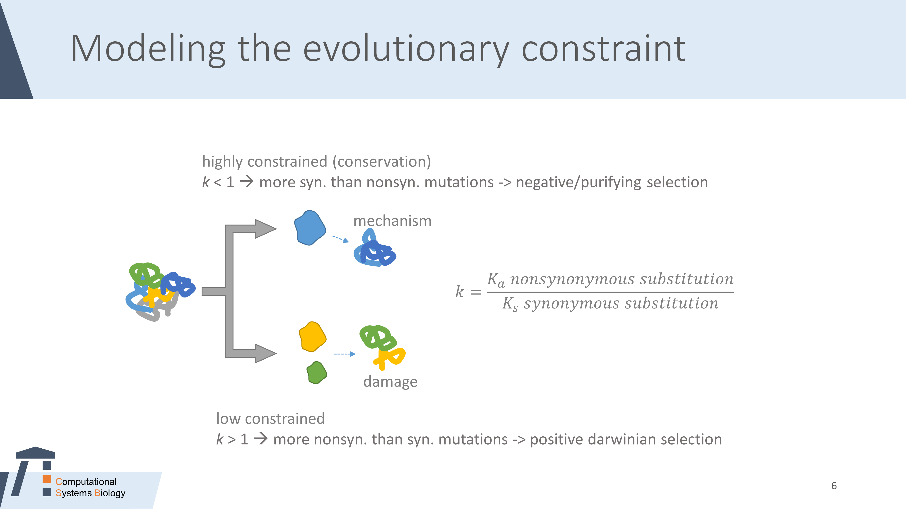

Interested? Contact muehlhaus@bio.uni-kl.de or venn@bio.uni-kl.de
The bachelor thesis focuses on the analysis of evolutionary constrained proteins. It aims to investigate the evolutionary rates of proteins and identify a special kind of key-regulator-mechanism in acclimation responses.
If you think of evolution, you intentionally assume, that sequences tend to evolve to become more thermostable over time.
But what is the reason that some sequences seems to be hindered to evolve and are kept thermolabile?
The idea is that defolding or aggregation during heat stress is no damage at all events, but more like a mechanism to trigger some heat stress responses.
Of course, this is not true for all aggregating proteins but maybe for some master key-regulators which have switch functions to (de)activate specific pathways if the cellular pool is suddenly depleted.
Mutations drive the evolutionary development. Simultaneously repair and quality check mechanisms prevent harmful mutations in the short term. Are there evolutionary mechanisms that prevent specific proteins from being mutated?
The substitution rate for chloroplastidic genes was calculated to be 3.3*10-10, which is almost 10 times lower than in genes of nuclear genomes, probably because of the plastid homologous recombination machinery and the dynamics of chloroplast genomes.
Are there proteins that are intentionally do not undergo stabilizing mutations and thereby are kept thermolabile?
The aim is to identify genes with low evolutionary rates by using the Ka/Ks ratio (sometimes referred as dN/dS, which describes the evolutionary rate of a DNA sequence.
- Ka is calculated by dividing all nonsynonymous substitutions per nonsynonymous site, or in other words: the number of sites where an nonsynonymous amino acid substitution occurred per all sites at which a nonsynonymous substitution is possible
- Ks is calculated by dividing all synonymous substitutions per synonymous site


The ratio k of nonsynonymous (Ka) to synonymous (Ks) nucleotide substitution rates is an indicator of selective pressures on genes.
k > 1: more nonsyn than syn mutations -> positive darwinian selection; driving change
k = 1: equal rate of mutations -> neutral evolution
k < 1: more syn than nonsyn mutations -> negative/purifying selection; acting against change
Candidates can be investigated by comparing mutation rates of all proteins over several species within the Chlorophyta phylum and identify anomalies.
Thereby, proteins found in aggregates are of particular interest since these are thermolabile and hypothetically should be under evolutionary pressure to become more stable.
If there is an equal slow/negative selection of orthologs between species, it’s a clue for thermolability as a mechanism rather than a damage.
Of course, you have to consider, that a strong conservation may be due to preserving the proteins’ function. Accordingly, you have to make sure to keep the proteins affinity/activity
in mind that may require further investigation of mutants proposed by the result of the analysis.

-
collect various genomes from Chlorophyta phylum
- various genomes are available upon request
- multiple sequence alignment of proteins using ClustalW
- Construction of an adequate substitution model since some mutations are far more likely than others.
- Check the evolution rate of the proteins across the phylum. If the evolution rate is equal (or equally low) for a specific protein, it may hint to a conserved strategy of the protein
-
In previous work we identified transcripts that were up regulated while protein abundance decreased during heat acclimation. This anticorrelation points to specific regulatory role or thermolability.
- is there an overlap of both analysis?
-
How is the ratio of silent/non silent mutations, especially in RubisCO activase?
-
RubisCO activase aggregates during the first period of heat treatment leading to starch depletion and increased TAG-production due to increased free energy reduction equivalents from photosynthesis.
After the membrane remodelling the amount of RubisCO activase recovers.
- Hemme, D., Veyel, D., Mühlhaus, T […] Schroda M. (2014). Systems-Wide Analysis of Acclimation Responses to Long-Term Heat Stress and Recovery in the Photosynthetic Model Organism Chlamydomonas reinhardtii. The Plant cell 26, 4270-4297.
-
Silent mutations are not necessarily 'silent' because altered mRNA sequences may affect transcription, splicing procedures, mRNA transport or translation, even if the protein sequence is identical in the end.
Translation can be affected by differential codon usage.
- A further possibility to preserve a certain kind of thermolability is the requirement for sufficient flexibility to undergo conformational changes during its catalytic activity.
- How many nucleotide substitutions actually took place?, Jukes TH, 1990
- Evolutionary perspectives on protein structure, stability, and functionality, Goldstein Richard; in 'Biological Evolution and Statistical Physics', p 82, Springer 2001
- (Introductional) Was ist molekulare Evolution? Die molekulare Uhr; in FJ Ayala, Die großen Fragen Evolution, p 80, DOI 10.1007/978-3-642-33006-3_10,
- (Introductional) 3.12 Molekulare Systematik, Zrzavýin et al.; in Evolution, p 199, Spektrum 2003
- Evolutionary Rates and Expression Level in Chlamydomonas, Popescu et al., 2005, 10.1534/genetics.105.047399
- (Introductional) Gene, Zufall, Selektion - Populäre Vorstellungen zur Evolution und der Stand des WIssens, Veiko Krauß, Springer, 2014
- Codon substitution in evolution and the saturation of synonymoous changes, Gojobori, Genetics Society of America, 1983
- POTION: an end-to-end pipeline for positive Darwinian selection detection in genome-scale data through phylogenetic comparison of protein-coding genes, Hongo et al., 2015
- Computational Modeling for Evolution of HSP90A Homologues, Datta et al., IJETTCS, 2017
- KaKs_Calculator 2.0: A Toolkit Incorporating Gamma-Series Methods and Sliding Window Strategies, Wang, GENOMICS PROTEOMICS & BIOINFORMATICS, 2010
- Statistical methods for detecting molecular adaptation, Yang & Bielawski, TREE, 2000
- Estimating Synonymous and Nonsynonymous Substitution Rates Under Realistic Evolutionary Models, Yang & Nielsen, 2000
- Computing Ka and Ks with a consideration of unequal transitional substitutions, Zhang et al., BMC, 2006
- Determinants of the rate of protein sequence evolution, Zhang & Yang, Nature revies Genetics, 2015
- http://bioinformatics.cvr.ac.uk/blog/calculating-dnds-for-ngs-datasets/